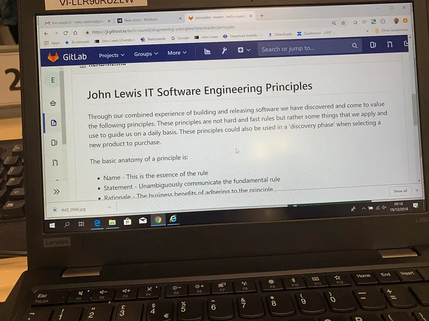

John Lewis Software Engineering Principles¶
We have created a set of Software Engineering principles that we use internally that form a common belief in how software should be built within John Lewis IT Delivery. They can be found here http://engineering-principles.jl-engineering.net/
Why create a set of Principles?¶
The success of our organisation is dependent on implementing outstanding software solutions in a sustainable way. Rather than simply declaring that “Engineering Excellence” is important to us, we embarked on creating a set of principles that describe what that means to us in practice.
Principles instead of policy or standards¶
When creating the principles we didn’t want to dictate how each engineering team should build their product by creating another policy document as we want teams to feel empowered. We also didn’t want this to become another document that was quietly ignored. On that basis we created the principles as a set of beliefs that are important to us as an organisation.
We wanted to create principles that are actionable rather than create a set of truisms that are easy to agree with but of no real value in practice. For each of the principles we describe why we believe it to hold true and the implications of actually working to the principle.
When we created the principles some of them were controversial. For example we created Cloud Native as a principle when almost all new projects were still hosting solutions on traditional infrastructure. As an organisation we now host most new solutions on cloud infrastructure. Maybe most controversially we created and then removed Reusable Components as a principle. Through experience we learned that the principles Design For Pace of Change and Evolutionary Systems set out our real intent, which is that while reuse is often valuable, inappropriate reuse inhibits change and should emerge through evolution rather than being designed up front.
How did we create the principles?¶
Inside John Lewis IT we have a serious sounding body we call the Tech Council which is a bunch of experienced developers that meet up once a week to discuss anything about our organisation’s engineering approach. The Tech Council created the initial principles, hosting them in Git and setting up a CD pipeline to publish them to a website whenever they are changed. The principles are “open sourced” internally so anybody can suggest improvements by making a merge request.

We always share the principles with any new Partners or suppliers we use. We have had valuable contributions from some very well known figures from the world of agile software development that have worked with us recently, some of whom have shared our principles with their other clients (which we are very happy about).
How have the principles impacted our organisation?¶
We never wanted them to be another document that gathered dust in the filing cabinet. They are used as part of the training for anybody up-skilling to be a software engineer within our organisation, which on its own is great.
But they have also been used to resolve the inevitable disagreements about engineering approach that crop up in a large organisation. The principles are a simple way to evaluate how differing opinions align themselves to our organisational beliefs, and if our beliefs are not shared we would rather resolve that first.
Engineering teams often create their own charters about how they will approach the engineering problem in their particular context. They have found it useful to validated their charters against the principles instead of creating their own value system.
What next for our principles?¶
We have recently started a process of evaluating how well engineering teams are aligned with the principles. I say aligned rather than comply with as the intent is to help teams rather than judge them. This will also help us as an organisation to understand how well we are performing and where we may need to make investment choices to improve our engineering performance.
A member of the Tech Council helps each team to evaluate itself and we have a guide to help with the evaluation process which includes things such as positive and negative indicators for each principle. Rather than give each team a total score out of 100 we use a red/amber/green traffic light against each principle.
We expect the evaluation process and the principles themselves to improve as we gain more experience with this.
The Principles¶
Build Differentiators¶
- Do you consider this when choosing the technology?
- Google Cloud Datastore or Elasticsearch are examples of “buy”
- Do you reinvent the wheel, building systems already out there?
Design for Emergent Reuse¶
- If there are lots of different components do you take into account the pace of change of the components?
- Do you over-engineer your solutions?
- Do you reuse for the sake of it?
- Is your system going to be around for a long time?
Evolutionary Systems¶
- If you change your system is it an isolated change with regard to other systems?
- How many people does it take to release?
- How often can you release?
- Can Ops release during the day?
- How many requirements do you put into one iteration?
- How future proof is it for requirements that may not exist?
Scale Horizontally¶
- State cannot be stored in-memory but rather must be persisted to the client or a shared datastore.
- It is not always possible to scale horizontally e.g. for traditional relational databases, increased performance is often achieved through better hardware or higher specifications
- Services should strive to be idempotent
Small and Simple¶
- How long do your tests take?
- Can you describe your components?
- Can you test your components independently?
- Can you deploy components independently?
Smarts in the Nodes, not the Network¶
- Do you have business logic in your integration layer?
- Do you apply business rules in your data transformations?
- If there is business logic is it for your own system’s consumption?
Cloud Native¶
- Are you leveraging the services in the cloud?
- Did you intend it to be in the cloud from the start?
Production Ready¶
- Do you understand your failure modes?
- Do you understand how monitoring helps you understand your failure modes?
- How close is the system to its limit?
- Are there circuit breakers?
- Are there rolling deployments, eg kubernetes?
- Do you have dashboards, golden signals, engineering metrics for traffic and resilience?
Keep Pace with Technological Change¶
- What technology is the team using?
- Is it up to date?
- Is it well supported?
- Is it current?
- How often is it upgraded and patched?
- Are the team interested in this area?
- Is the software on its way out?
Model the Business Domain¶
- Does it use DDD (Domain driven design)?
- Could a business person understand the language used in your code?
- How well do you own your domain?
- Are there changes not owned by your team?
Secure by Design¶
- Have you considered access control?
Consistent Environments¶
- Are you using infrastructure as code? Examples are terraform or puppet.
- Have you got any processes in keeping data up to date?
- Are there lots of manual processes?
Continuous Delivery¶
- Are you doing it? Are you using a CI tool?
- What manual gates are in place?
- Can you release straight to Production?
- Are you using trunk based development with feature flags as necessary?
- Are branches short-lived?
Get Feedback Early and Often¶
- Could you do daily releases?
Understandability¶
- If a new person joins, can they get up to speed quickly?
- Can code be safely refactored due to good test coverage?